Introduction
Rakuten Card is generally favored by foreigners because of its more relaxed screening process
and a faster rate of approval and delivery. The concept of there being no physical branches is both a blessing and a curse -
on one hand, you cannot go directly to a branch office for inquiries simply because they don't exist. However, a huge plus
is that because there are no physical branches, everything MUST be done over the Internet, which is more appealing in today's
technological age. Rakuten (aside from its lack of English website) has the most convenient internet card services compared to other
companies.
Please refer to the following for a list of advantages and disadvantages (compared to other credit card companies):
Advantages
- All services available over the internet
- (Usually) a fast screening/delivery process. Rakuten Card CMs often brag about 7 day delivery after signup
- Has a very usable mobile app (with limited features)
- Has English support if you must call them for any reason
Disadvantages
- Nobody to check your application before sending to screening. Errors will delay your registration process.
- It seems you cannot have multiple Rakuten Cards at the same time.
- Rakuten tends to spam your e-mail inbox a LOT.
Card Specs
| Credit Card | Gold Card | Premium Card | Rakuten ANA Card | |
|---|---|---|---|---|
| 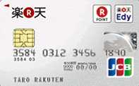 | 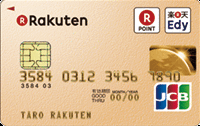 | 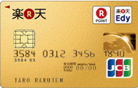 | 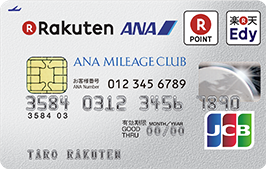 | |
| Annual Fee | - | 2160 | 10800 | 540 (waived after 1 use) |
| Brands | JCB, MasterCard, Visa | |||
| Cashing Interest Rate | 18.00% | |||
| Max Credit | 1,000,000 | 2,000,000 | 3,000,000 | (Unknown) |
| Edy Function | Yes | |||
| Rakuten Point Service | Yes | |||
| ETC | Yes (540/year) | |||
| R-Point Rate | 4x | 5x | 4x | |
| Insurance | Overseas: 20,000,000 | Overseas: 50,000,000 Domestic: 50,000,000 Property: 3,000,000 |
Overseas: 20,000,000 | |
| Domestic Airport Lounge |
- | Yes | ||
| Other Benefits |
- | - | * | ** |
Using Rakuten travel gives additional 1x, with luggage delivery and preferential treatment services.
Extra 1x when using Rakuten Showtime or purchasing on Rakuten Books.
Birthday service -> 1x additional points on Rakuten Ichiba/Books on your birthmonth
** : You will automatically be enrolled into the ANA club membership, where you can enjoy many benefits. By choosing this card, you will have the option of automatically transferring your Rakuten Super Points to ANA mileage. This card is one of the cheapest cards to use to accumulate ANA mileage points, due to almost non-existent annual fee.
Prerequisites
- A valid address in Japan
- A Japanese Bank Account
- You must already have a Rakuten Group account. Registration is easy since it is in English.
Some Notes...
Don't stay too long on a screen or else it will TIMEOUT and you will have to do it All. Over. Again. If you are slow in filling out Japanese forms
then I recommend you look over this guide first and prepare in however way you wish before proceeding.
Having Rikai-chan (Firefox) or
Rikai-Kun (Chrome)
installed on your browser will help in translating things that are missing in this guide.
Lastly, before you start, if you would like to support me in creating more guides and content on this website
(or if you are just a very, very generous person..!) you can help by entering in my referral code so that I get
super points when you successfully receive a Rakuten Card. It'll only be one extra field you will have to fill, so
I'd greatly appreciate it if you can contribute to me in this manner. My referral code is:
And, of course, I will show it again further below in the guide when we get there :-).
Lastly, the guide with images below will be for ANA Mileage Card, since this one has additional fields to fill. All of the cards have nearly-identical registration forms.
Application Process
Getting to Application Form
Pick the card you want to sign up for in the list above. For your convenience, here are the links that will take you directly to the landing page:
Once you're on the landing page, make sure it is the card you want to apply for.There should be a huge red button that's center-aligned to the page, having something along the lines of "楽天xxカードに入会" or "楽天xxカードの申し込み".
Click on that link to get started. Here's an example of the Rakuten (Normal) Card landing page:
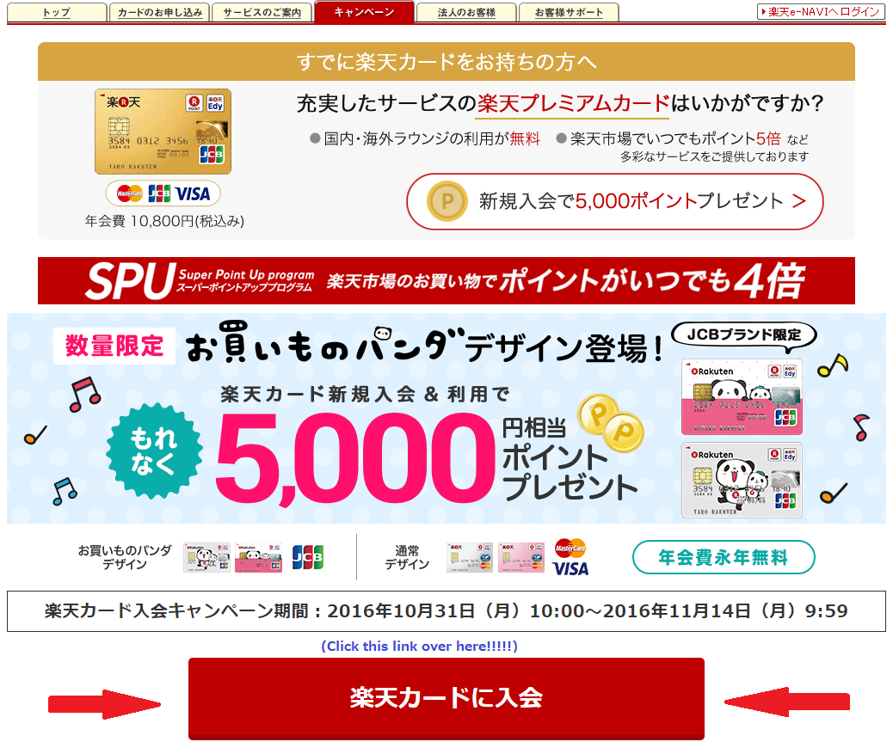
For all links above other than the Rakuten Premium Card, there will be an additional sub-landing page afterwards. For Rakuten normal card, click on the left-most option (red button).
For Rakuten Gold card, click the gold button. For Rakuten ANA Mileage card, there should be only one blue button so click that.
Form Part A: Bank Account Info
Let's begin: 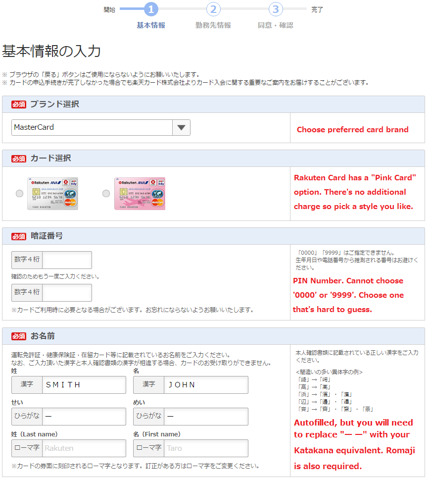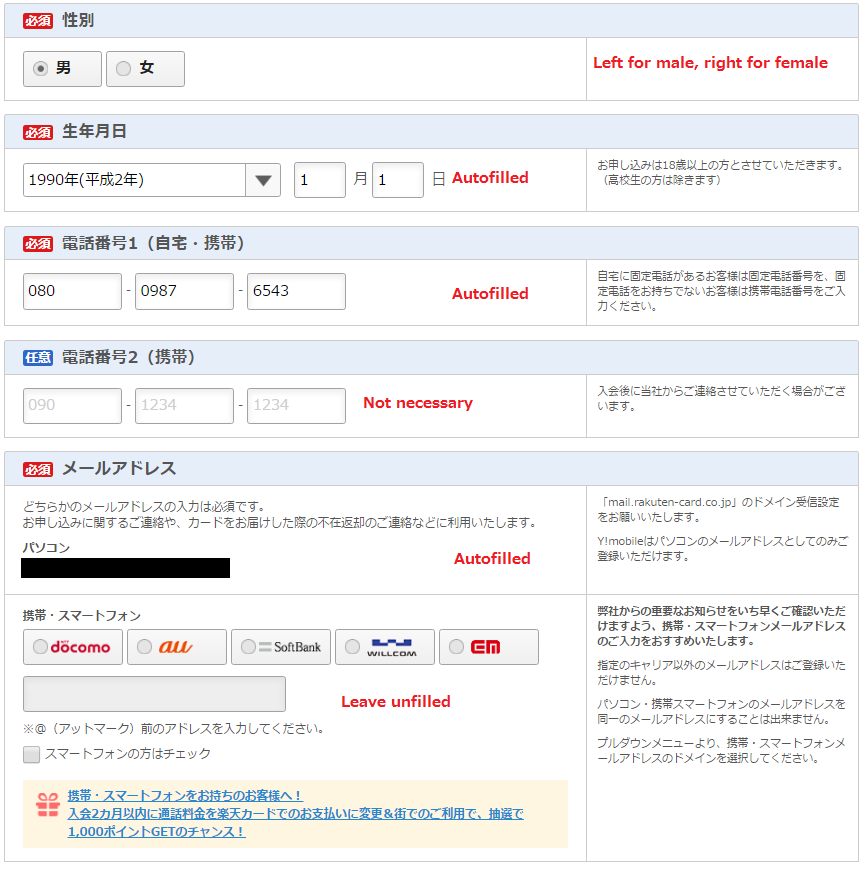
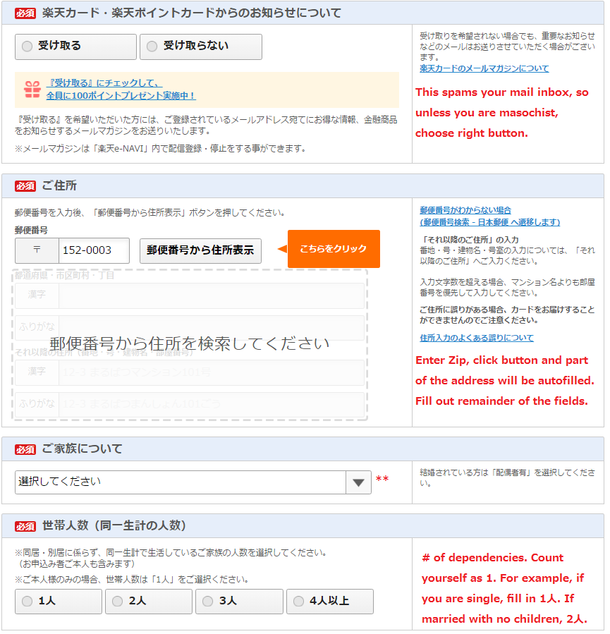 **) Family status. Refer to the following table for values:
| 配偶者有 子供有 | Married with children |
| 配偶者有 子供無 | Married without children |
| 配偶者無 子供有 | Unmarried but has children |
| 独身(家族別居) | Single (living apart from family) |
| 独身(家族同居) | Single (living with family) |
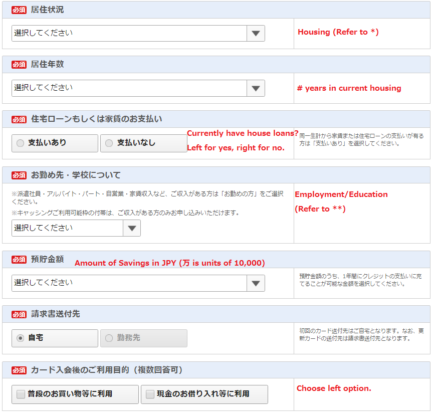 *) Housing. Refer to the following table for values:
| 持家（自己所有） | Owns a house |
| 持家（配偶者所有） | Spouse owns house |
| 持家（配偶者以外所有） | House owned neither by you or spouse |
| 賃貸マンション | Rental "Mansion" |
| アパート | Apartment |
| 借家 | Renting house |
| 社宅・官舎 | Company housing |
| 寮 | Dormitory |
| 下宿・間借 | Boarding house |
| その他 | Others |
| お勤めの方（家賃収入等含む） | Employed |
| 学生の方 | Student |
| 年金受給の方 | Earns retirement benefits |
| お勤めされてない方 | Unemployed |
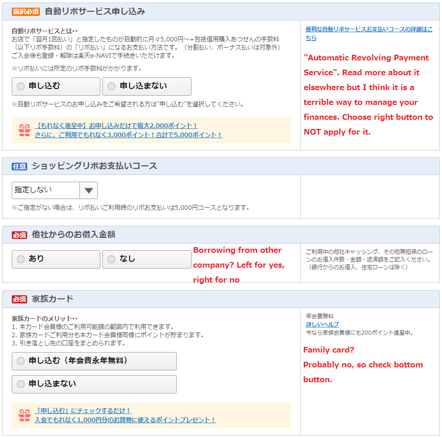
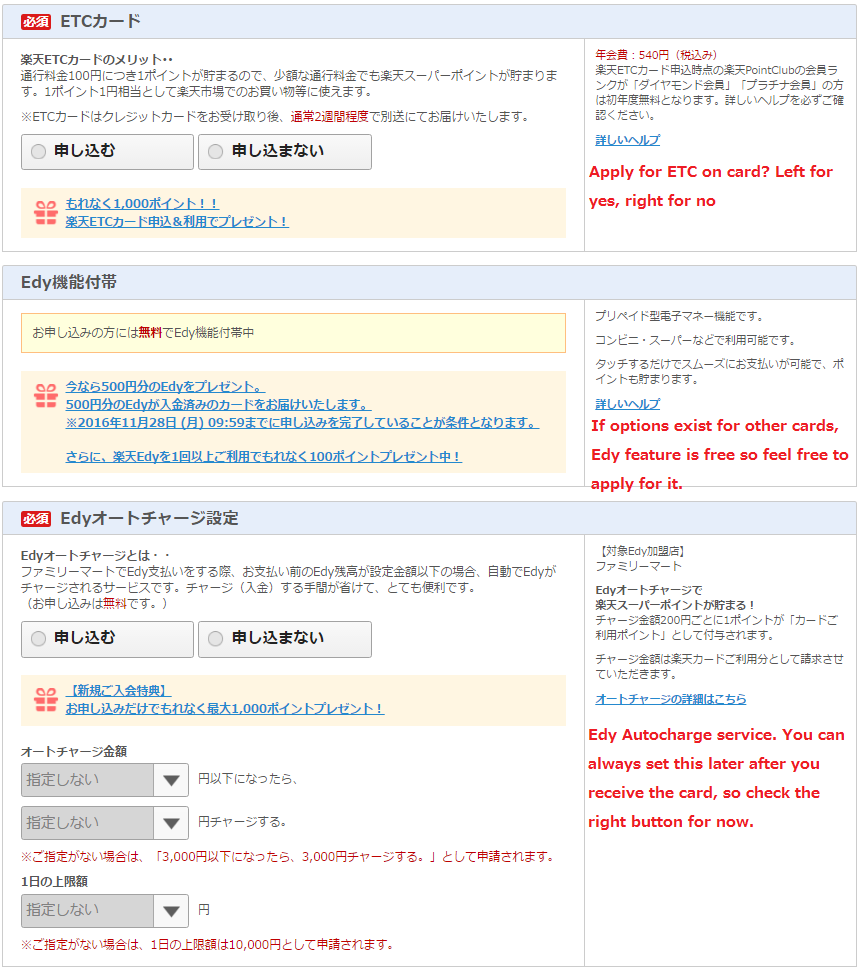
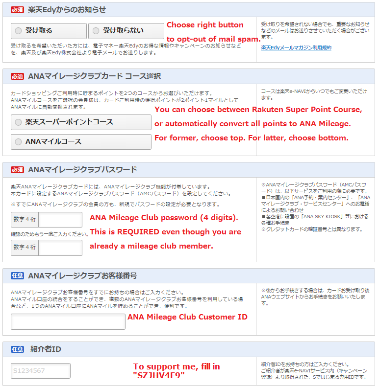
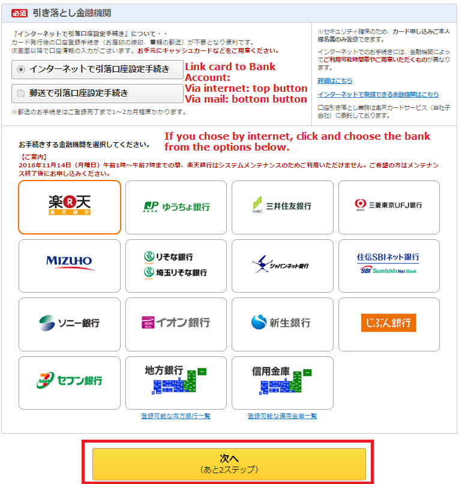
Form Part B: Company Information
Note: If you are unemployed or are otherwise not affiliated with a company, then this page may be skipped. Proceed to next section. 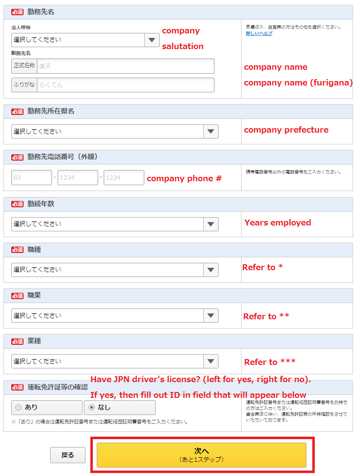Form Part C: Linking Bank Account
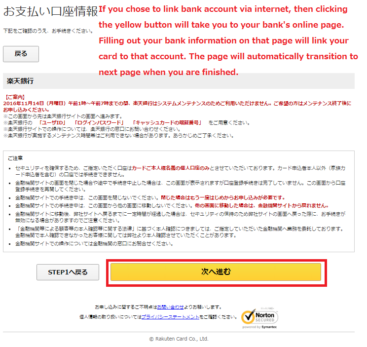Form Part D: Confirmation
Make sure you check the confirmation box above the Red button. If you scroll down you will see all the values you have entered up to this point. If everything looks good, then go ahead and click the red button. 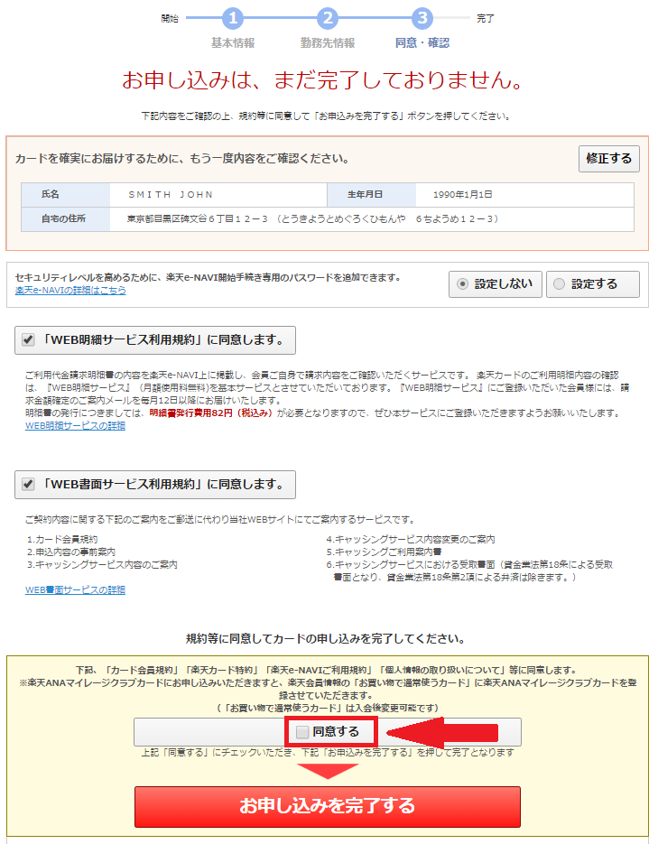Form Part E: Receipt
Aaaand you're done! You will receive an e-mail with the confirmation receipt number (though if everything goes well you won't need it). 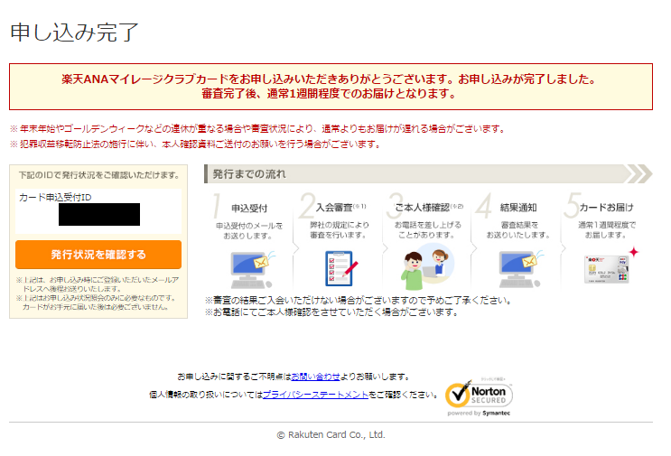What to do after
In the next coming business days you will see an e-mail saying whether you have passed the screening or not. If you have, then the card will be on it's way over to the address you wrote in the registration. If you chose to link your bank account via mail, then you will receive a form in the mail to fill out and send back to them. In this case, you will need to fill the form in, stamp it with your Inkan, and mail the postcard-size letter in (no additional cost to you).
Trivia/Nice-To-Knows
Sometime in 2016 the CEO of Rakuten, Hiroshi Mikitani, ordered the card business to revise the screening procedure for applying for Rakuten card. Due to this initiative, the percentage of applicants who passed the screening was notably raised (to somewhere around 80% as of 2016 3Q). It is uncertain whether the screening procedure has become more relaxed for foreign residents, however.